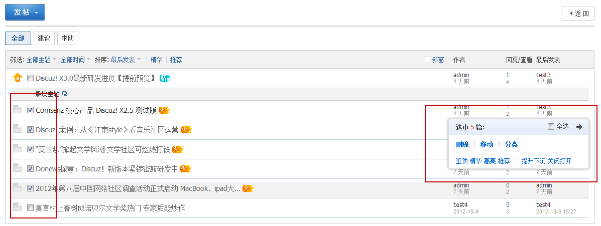
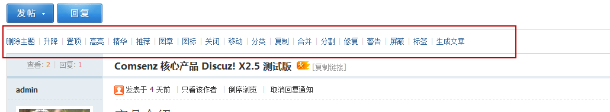

前台管理
在前台供提供了两种管理帖子的方式，第一种是列表页管理，当看到帖子标题就可以判断是违规帖等时，可以选中直接对其进行删除等，方便批量操作；另一种是内容页管理：当看了帖子内容，想对其进行操作时，可以直接使用帖子上方或帖子下方的管理条进行操作。下边我们来详细介绍：
一、列表页管理
在主题列表页，可以对主题进行批量管理，选中要管理的主题，可以将其删除、移动、分类、置顶、精华、高亮、推荐、提升下沉、关闭打开
二、内容页管理
在主题的内容页，根据需求可以对该主题进行删除、升降（将主题提升至顶部或下降至底部一次，但不固定在此）、置顶、高亮、精华、推荐、图章、图标、关闭、移动、分类、复制、合并（将本主题合并到目标主题下）、分割（将某楼层生成一个新主题）、修复、警告（被警告一定次数后的用户将被自动禁止发言 30 天，之前所发内容也将被自动屏蔽）、屏蔽、标签、生成文章以及推送（将主题推送到门户下的模块）的操作